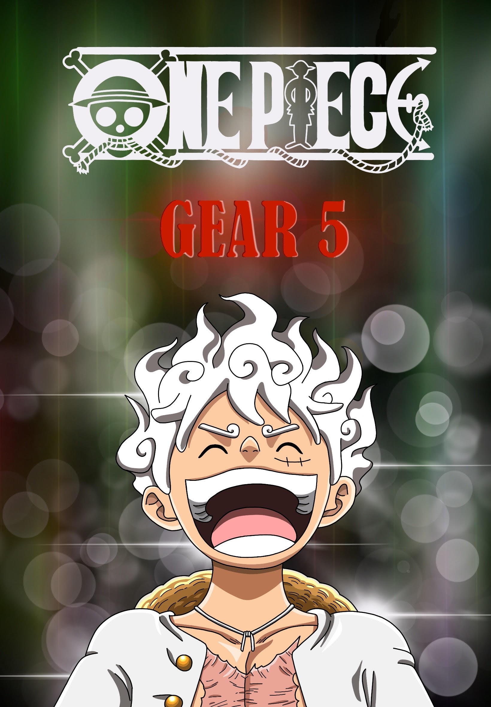
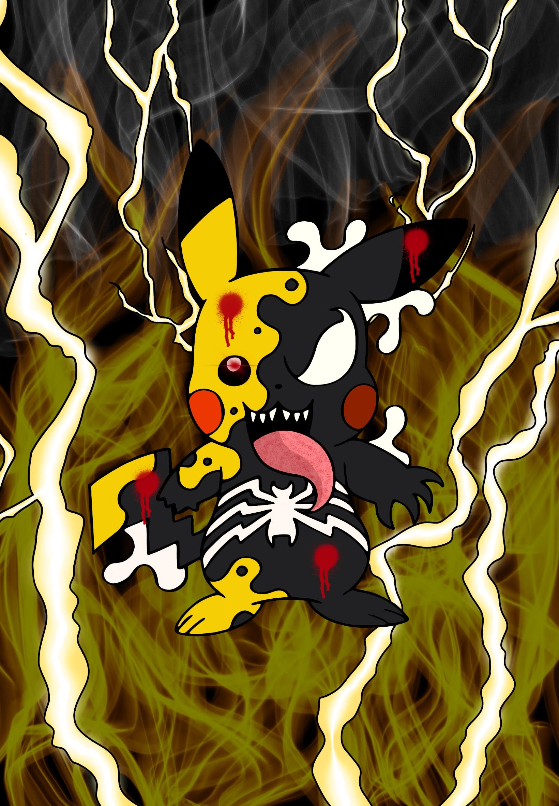
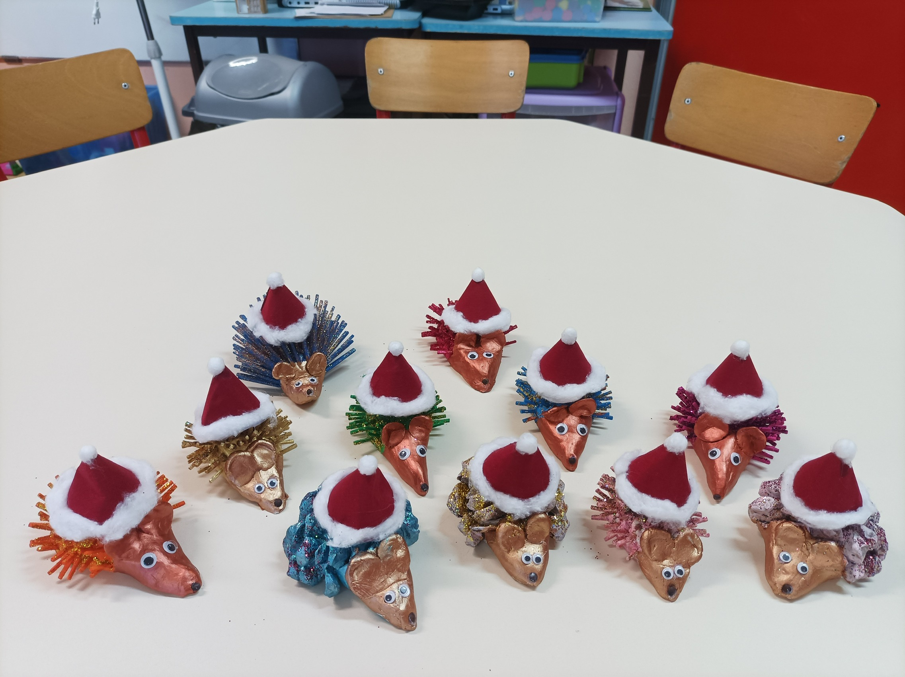
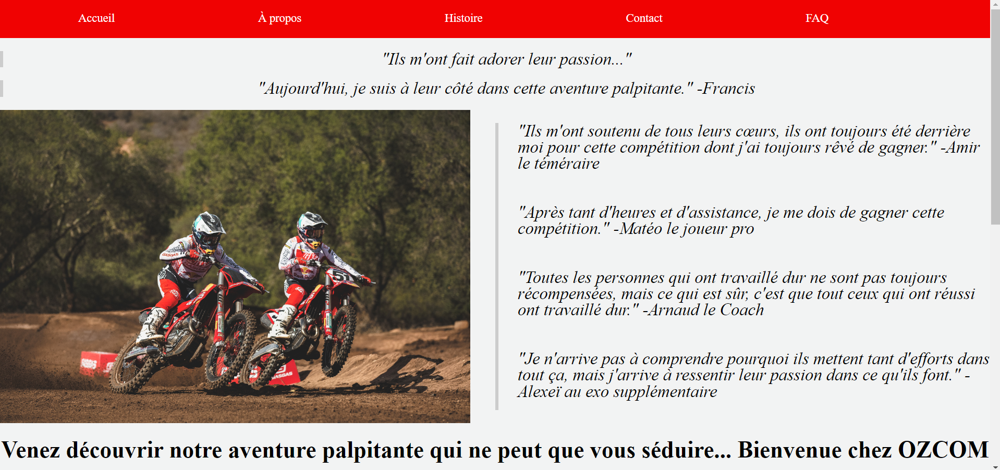

Mon portfolio :

Voici mon premier dessin. Il représente le personnage principal de l'anime One Piece, Luffy, sous sa forme Gear 5.
Ce dessin m'a pris environ 4 heures à réaliser.
Les contours, les couleurs, les textes, les jeux de lumières, tout a été réalisé par mes soins.
Je l'ai fait sur un logiciel de dessins : Procreate.


Voici mon second dessin. Il représente Pikachu se faisant absorber par l'entité Vénom.
Ce dessin m'a pris environ 2 heures à réaliser.
Je l'ai réalisé à l'occasion d'Halloween.
J'ai simplement reproduit un modèle déjà existant sur Pinterest, mais en l'améliorant à ma façon.
Les couleurs, les détails ainsi que le font en feu sont tout droit sortis de mon imagination.
Je l'ai fait sur le même logiciel de dessins : Procreate.
Voici ma carte de vœux pour le nouvel an 2024.
Contexte : je travaille en tant que service civique dans une école primaire. La directrice de l'école m'a demandé de réaliser une carte de vœux à destination des parents et des différents services de l'école.
Mon modèle de base est une photo (voir juste en bat), sur laquelle il y avait des petits hérissons en poterie, très colorés, très jolis, mais côte à côte sur une table d'une classe.
En gros, j'ai dû détourer chaque hérisson un par un, pour les placés de sortes à ce que ça recouvre la feuille, puis mettre un cadre avec le texte au milieu... J'ai bien précisé CHAQUE !
Ce fut long...
Mais je suis quand même plutôt content du résultat, ça rend bien, c'est mignon, je considère ça comme une mission réussi.

